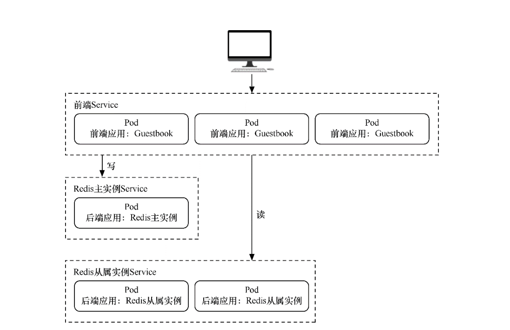

无状态项目部署案例¶
本节将演示如何用Kubernetes来部署无状态的多层Web应用程序——Guestbook。
该应用程序是一个简单的留言板程序，包含以下3个部分，并拥有读写分离机制。
□ 前端应用：Guestbook的留言板应用，将部署多个实例以供用户访问。
□ 后端存储（写）：Redis主应用，用于写入留言信息，只部署一个实例。
□ 后端存储（读）：Redis从属应用，用于读取留言信息，将部署多个实例。
Guestbook的整体结构与各部分之间的交互
1. 创建namespace¶
[root@ci-base no_status]# kubectl create ns dev
namespace/dev created
2. 创建redis-master¶
redis-master.deployment.yml
apiVersion: apps/v1
kind: Deployment
metadata:
name: redis-master
labels:
app: redis
namespace: dev
spec:
selector:
matchLabels:
app: redis
role: master
tier: backend
replicas: 1
template:
metadata:
labels:
app: redis
role: master
tier: backend
spec:
containers:
- name: master
image: kubeguide/redis-master
resources:
requests:
cpu: 100m
memory: 100Mi
ports:
- containerPort: 6379
这个模板中使用了Redis镜像，并将作为主存储使用，其实例数量为1。应用模板后，Redis主实例的Pod状态
[root@ci-base no_status]# kubectl create -f redis-master.deployment.yml
deployment.apps/redis-master created
[root@ci-base no_status]# kubectl get pod -n dev
NAME READY STATUS RESTARTS AGE
redis-master-598bcbf4f7-4qk6h 1/1 Running 0 17s
[root@ci-base no_status]# kubectl get deployment -n dev
Redis-Master
Pod创建完毕后，需要为其创建Service，以便前端应用可以调用它来存储数据，以及从属应用可以从中同步数据。接下来，创建一个名为redis-master.service.yml的文件
redis-master.service.yml
apiVersion: v1
kind: Service
metadata:
name: redis-master
labels:
app: redis
role: master
tier: backend
namespace: dev
spec:
ports:
- port: 6379
targetPort: 6379
selector:
app: redis
role: master
tier: backend
[root@ci-base no_status]# kubectl create -f redis-master.service.yml
service/redis-master created
这个模板通过标签引用了Redis的Pod，并为其创建了类型为ClusterIP的Service。应用模板后，Redis主实例的Service状态
[root@ci-base no_status]# kubectl get svc -n dev
NAME TYPE CLUSTER-IP EXTERNAL-IP PORT(S) AGE
redis-master ClusterIP 10.98.208.133 <none> 6379/TCP 30s
[root@ci-base no_status]# kubectl get ep -n dev
NAME ENDPOINTS AGE
redis-master 10.244.77.226:6379 39s
[root@ci-base no_status]# kubectl get pod -n dev -o wide
NAME READY STATUS RESTARTS AGE IP NODE NOMINATED NODE READINESS GATES
redis-master-598bcbf4f7-4qk6h 1/1 Running 0 4m14s 10.244.77.226 k8s-w9 <none> <none>
3. 创建redis-slave¶
虽然Redis主实例是单个容器，但是可以添加Redis从属实例来增加其负载能力。接下来，部署Redis从属应用，并为其指定两个实例。创建一个名为redis-slave.deployment.yml的文件，
apiVersion: apps/v1
kind: Deployment
metadata:
name: redis-slave
labels:
app: redis
namespace: dev
spec:
selector:
matchLabels:
app: redis
role: slave
tier: backend
replicas: 2
template:
metadata:
labels:
app: redis
role: slave
tier: backend
spec:
containers:
- name: slave
image: kubeguide/guestbook-redis-slave
resources:
requests:
cpu: 100m
memory: 100Mi
env:
- name: GET_HOSTS_FROM
value: dns
ports:
- containerPort: 6379
这个模板使用了Redis从属镜像，其实例数量为2，后续可根据访问的负载情况随时调整实例数量。
该模板通过两个环境变量name: GET_HOSTS_FROM和value: dns自动从中解析出Redis主实例的地址并加以引用。应用模板后，Redis从属实例的Pod状态
[root@ci-base no_status]# kubectl apply -f redis-slave.deployment.yml
deployment.apps/redis-slave created
[root@ci-base no_status]# kubectl get pod -n dev|grep redis-slave
redis-slave-df7466bc9-dnqpm 1/1 Running 0 8s
redis-slave-df7466bc9-trw8p 1/1 Running 0 8s
[root@ci-base no_status]# kubectl get deploy -n dev|grep redis-slave
redis-slave 2/2 2 2 49s
Redis-Slave Pod创建完毕后，需要为其创建Service，以便前端应用可以调用它来读取数据。
接下来，创建一个名为redis-slave.service.yml的文件，在文件中填入以下内容并保存。
apiVersion: v1
kind: Service
metadata:
name: redis-slave
labels:
app: redis
role: slave
tier: backend
namespace: dev
spec:
ports:
- port: 6379
selector:
app: redis
应用模板
[root@ci-base no_status]# kubectl apply -f redis-slave.service.yml
service/redis-slave created
[root@ci-base no_status]# kubectl get svc -n dev|grep redis-slave
redis-slave ClusterIP 10.102.11.78 <none> 6379/TCP 34s
[root@ci-base no_status]# kubectl get ep -n dev|grep redis-slave
redis-slave 10.244.77.226:6379,10.244.77.227:6379,10.244.77.228:6379 42s
[root@ci-base no_status]# kubectl get pod -n dev -o wide
NAME READY STATUS RESTARTS AGE IP NODE NOMINATED NODE READINESS GATES
redis-master-598bcbf4f7-4qk6h 1/1 Running 0 12m 10.244.77.226 k8s-w9 <none> <none>
redis-slave-df7466bc9-dnqpm 1/1 Running 0 4m24s 10.244.77.227 k8s-w9 <none> <none>
redis-slave-df7466bc9-trw8p 1/1 Running 0 4m24s 10.244.77.228 k8s-w9 <none> <none>
[root@ci-base no_status]# kubectl get svc -n dev
NAME TYPE CLUSTER-IP EXTERNAL-IP PORT(S) AGE
redis-master ClusterIP 10.98.208.133 <none> 6379/TCP 9m18s
redis-slave ClusterIP 10.102.11.78 <none> 6379/TCP 80s
4. 创建frontend¶
Redis存储实例创建完毕后，就可以创建前端应用程序了。留言板应用程序是一个前端Web程序，基于PHP编写。该应用程序会连接到Redis主实例以执行写入请求，同时会连接到Redis从属实例以执行读取请求。
接下来创建一个名为frontend.deployment.yml的文件，在文件中填入以下内容并保存。
apiVersion: apps/v1
kind: Deployment
metadata:
name: frontend
labels:
app: guestbook
namespace: dev
spec:
selector:
matchLabels:
app: guestbook
tier: frontend
replicas: 3
template:
metadata:
labels:
app: guestbook
tier: frontend
spec:
containers:
- name: php-redis
image: kubeguide/guestbook-php-frontend
resources:
requests:
cpu: 100m
memory: 100Mi
env:
- name: GET_HOSTS_FROM
value: dns
ports:
- containerPort: 80
这个模板使用了hjl-frontend:v3镜像，其实例数量为3，后续可根据所访问的负载情况随时调整实例数量。该模板通过两个环境变量name: GET_HOSTS_FROM和value: dns自动从中解析出Redis主实例和Redis从属实例的地址并引用。应用模板后，Guestbook实例Pod的状态如下
[root@ci-base no_status]# kubectl apply -f frontend.deployment.yml
deployment.apps/frontend created
[root@ci-base no_status]# kubectl get pod -n dev |grep frontend
frontend-78b47669f6-bc7v5 1/1 Running 0 99s
frontend-78b47669f6-qdscx 1/1 Running 0 99s
frontend-78b47669f6-t4m8d 1/1 Running 0 99s
最后，为前端留言板应用创建Service，这样就可以供用户访问了，因此，创建一个名为frontend.service.yml的文件，在文件中填入以下内容并保存。
apiVersion: v1
kind: Service
metadata:
name: frontend
labels:
app: guestbook
tier: frontend
namespace: dev
spec:
type: NodePort
ports:
- port: 80
nodePort: 30001
selector:
app: guestbook
tier: frontend
该模板通过NodePort类型的Service将服务提供给各个集群主机的30222端口，这样就可以在浏览器地址栏中输入“http://{主机IP}:30222”来访问留言板页面了。应用模板后，Guestbook实例的Service状态如下
[root@ci-base no_status]# kubectl apply -f frontend.service.yml
service/frontend created
[root@ci-base no_status]# kubectl get svc -n dev |grep frontend
frontend NodePort 10.99.34.225 <none> 80:30222/TCP 3s
[root@ci-base no_status]# kubectl get svc,pod,deploy -n dev
NAME TYPE CLUSTER-IP EXTERNAL-IP PORT(S) AGE
service/frontend NodePort 10.97.7.208 <none> 80:30001/TCP 5m9s
service/redis-master ClusterIP 10.106.240.32 <none> 6379/TCP 5m8s
service/redis-slave ClusterIP 10.107.166.193 <none> 6379/TCP 5m8s
NAME READY STATUS RESTARTS AGE
pod/frontend-58f67d657c-ctgwb 1/1 Running 0 5m9s
pod/frontend-58f67d657c-g6d6r 1/1 Running 0 5m9s
pod/frontend-58f67d657c-jvzrb 1/1 Running 0 5m9s
pod/redis-master-c55488447-xz5z9 1/1 Running 0 5m8s
pod/redis-slave-67456bdf78-b67cs 1/1 Running 0 5m8s
pod/redis-slave-67456bdf78-dd4pn 1/1 Running 0 5m8s
NAME READY UP-TO-DATE AVAILABLE AGE
deployment.apps/frontend 3/3 3 3 5m9s
deployment.apps/redis-master 1/1 1 1 5m9s
deployment.apps/redis-slave 2/2 2 2 5m8s
5. 验证测试¶
接下来，就可以在URL中输入地址访问留言板应用了。在本例中地址为http://192.168.xx.xx:30001，进入页面后在文本框中输入文字，然后单击Submit按钮，留言将自动显示在页面下方。